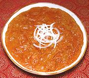

|
Chicken Curry ParseeChicken Curry Parsee | ||||
| Serves: Effort: Sched: DoAhead: |
2 main *** 1-1/3 hrs Yes |
This intensely red (and intensely delicious) curry is made in the Parsee community of Mumbai. The recipe as given produces a lot of sauce, so it can be expanded with more chicken or potatoes (see Notes 6 and 7). | |||
|
1-1/4 9 ------ 1/4 1/2 2 4 1/2 2 3 2 1/2 ------ 2 1/4 3 1/4 ------ 3 14 2/3 1/3 |
# oz --- t t in T T t --- cl in oz t --- T oz t t |
Chicken meat (1) Tomatoes -- Spices Cumin Seed Coriander Seed Cloves Peppercorns Cassia Stick (2) Cardamom, green Kashmir Chili (3) Paprika (4) Salt -- Paste Garlic Ginger Root Onions Sesame Seed ---------- Oil Coconut Milk Vinegar, cane (5) Garam Masala |
PREP - (25 min)
|